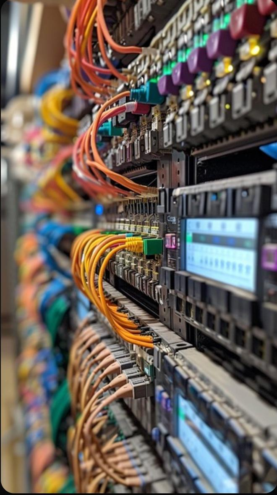

Homelab opzetten

Wat is dit project?
Voor dit project heb ik thuis een volledig eigen netwerk en server opgezet. Het doel was om een veilige en beheersbare omgeving te maken waar ik verschillende diensten kan draaien en testen zonder dat dit invloed heeft op mijn gewone netwerk.
Wat heb ik gedaan?
Ik heb een oude laptop omgebouwd tot een server en daarop Proxmox geïnstalleerd. Proxmox is een virtualisatieplatform waarmee je meerdere virtuele machines kunt draaien op één fysieke machine.
Daarna heb ik het netwerk gesegmenteerd met VLAN's zodat de homelab-machines in een apart netwerk zitten. Verder heb ik een pfSense firewall geconfigureerd om de toegang te controleren.

Wat heb ik geleerd?
Dit project heeft mij veel geleerd over netwerksegmentatie, virtualisatie en het beheer van Linux-servers. Het was soms moeilijk maar ik heb veel opzoekwerk gedaan en stap voor stap de problemen opgelost.